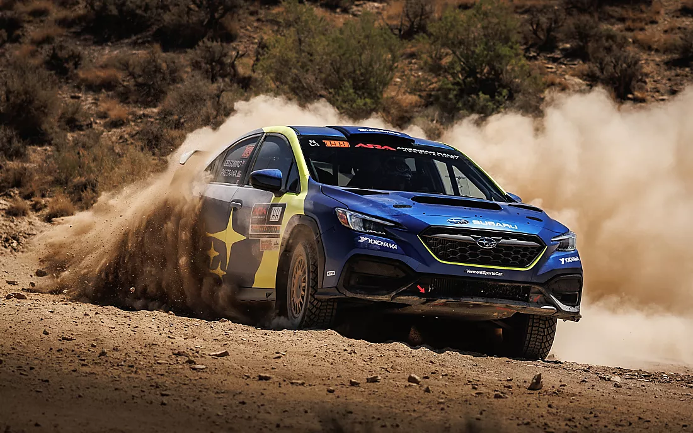

Confidence in motion
Subaru builds vehicles for those who love the road less traveled. From symmetrical all‑wheel drive to the advanced EyeSight driver assist, every detail is engineered for safety, durability, and adventure. Whether you're a family planning a weekend camping trip or a rally fan who appreciates boxer engines, Subaru offers a unique driving experience.

Why Subaru stands out
For over 50 years, Subaru has combined Japanese reliability with a fearless spirit. Our core values – safety, all‑weather capability, and longevity – have created a loyal community. In this brand guide, you will explore every model, breakthrough technology, and the stories that define us.